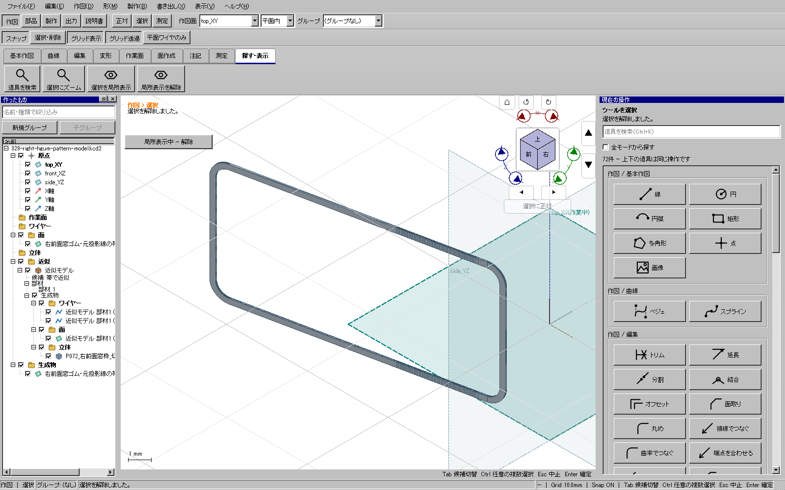

2026-11-09。添付模型由来の製作モデルで、組立率0%から0.1 mmの枠部品を固定すると3,036面になった。固定生成の私有処理を修正し、同じ通常UI操作で4面の閉ソリッドを作成した。部品の穴と切断輪郭を保持し、曲線の平滑化や許容誤差の緩和は行っていない。
| 修正前 | 修正後 | |
|---|---|---|
| 面数 | 3,036 | 4 |
| 独立KCD2 | 4,119,463 byte | 401,326 byte |
| 閉ソリッド | 1 | 1 |
修正前。平板の内部区間と境界ごとに面が増えている。

修正後。内側の開口を残した一枚の平板。人工的な完成予想図ではない。
支持点と材料境界が同一平面上にあり、各区間の法線も一致する場合だけ、一枚の支持平面を使う。短く浅い折れは、位置だけでなく角度でも判定して残す。材料の外形と穴は従来のnative検査経路で切り出す。密な直線境界の全頂点と全区間を次数1 B-splineへまとめる。滑らかな曲線へ近似し直す処理ではない。
従来の自己交差・穴の包含検査後にだけ境界表現をまとめ、面の有効性と面積を再確認する。条件を満たさない面は従来経路を使う。公開API、保存形式、板厚、製作モデルの近似・展開定義は変更しない。
最後の部分出力も追加修正した。単一のcore曲線へ変換できないnative辺は、既存の誤差保証付き境界取得を用いて、その辺の全区間を一つのワイヤーとして出す。隣の辺や物体全体は混ぜない。元nativeと文書リビジョンを保持する。
修正前に追加回帰が失敗することを確認。関連CTest10群、製作UI11件、出力UI24件が成功。密な凹輪郭と複数穴、傾斜/移動/法線反転、正負の折れ、ねじれた区間、nativeとSTEP再読込を含む。初回修正で浅い折れの回帰が失敗し、角度条件を加えてから成功した。
実UI446で枠の生成・履歴・保存・STEP、448で実際の3D辺選択・部分出力・ワイヤーとしての再読込が成功した。最初の実UIは輪郭判定で停止し、次は試験が名前変更を取り消して停止した。それぞれ別記録を保全して、正しい生成と取り消し順序で再実行した。
現時点は重点検証済み。今回の修正を含む全体・配布版検証と公開は後段。114部品の切り出し用CADと全体検査を継続する。実際の印刷・切断・曲げ・接着・組立は未実施であり、全形状/全操作経路の保証とはしない。